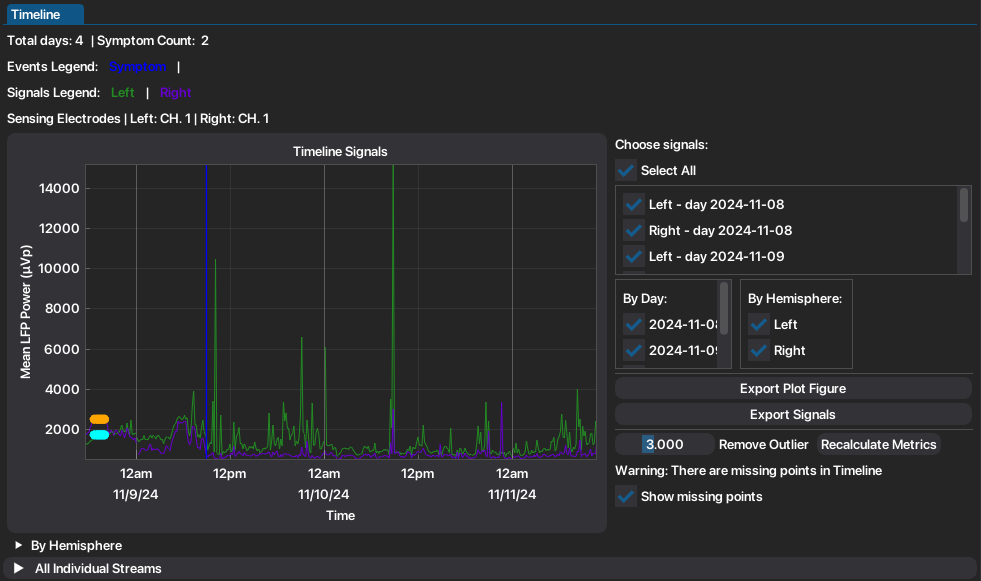
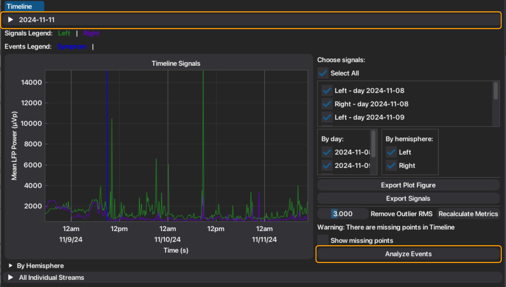
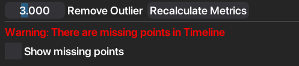
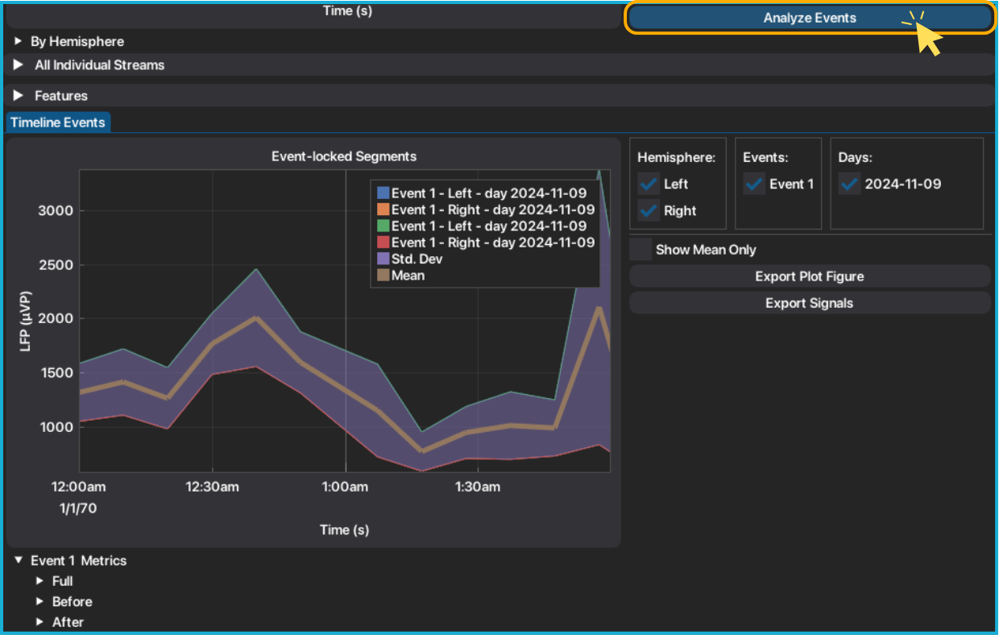
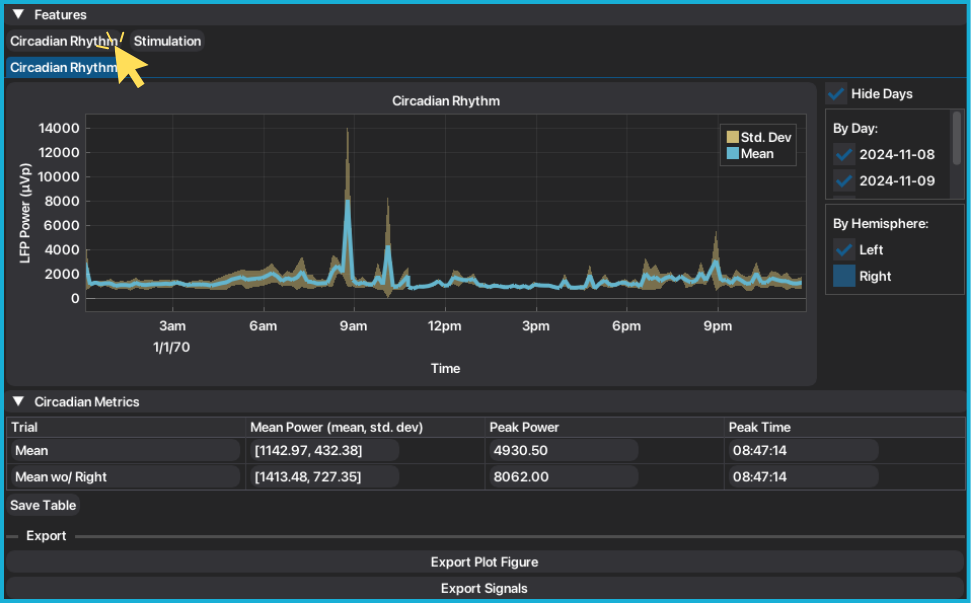
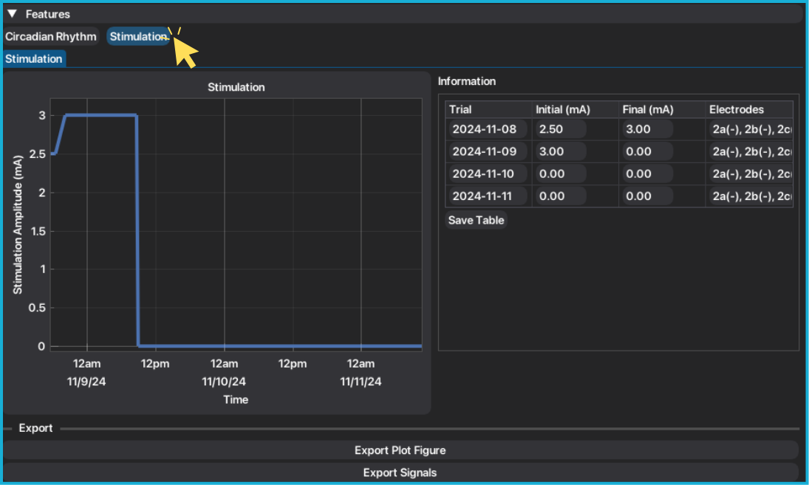
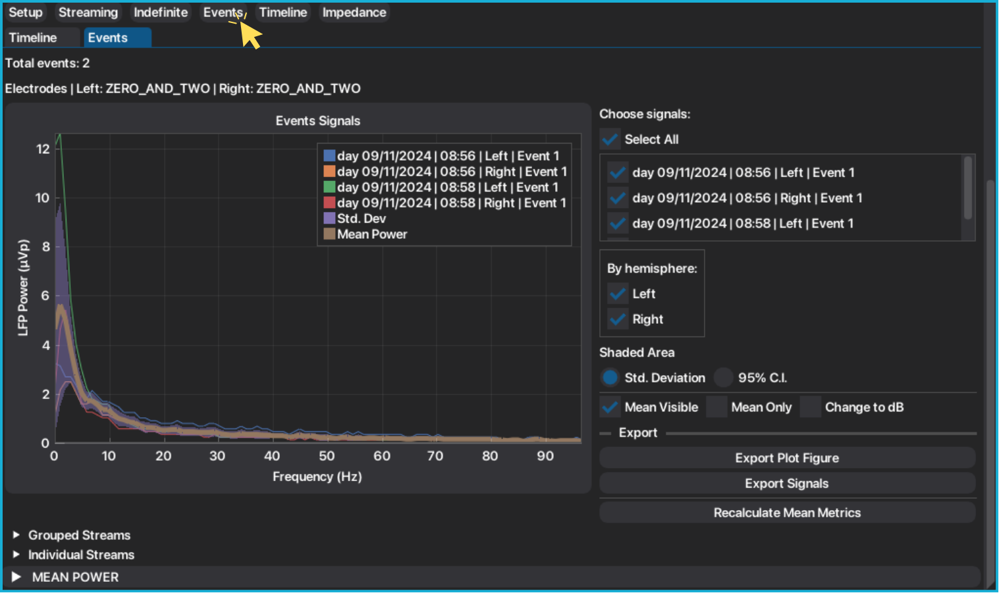
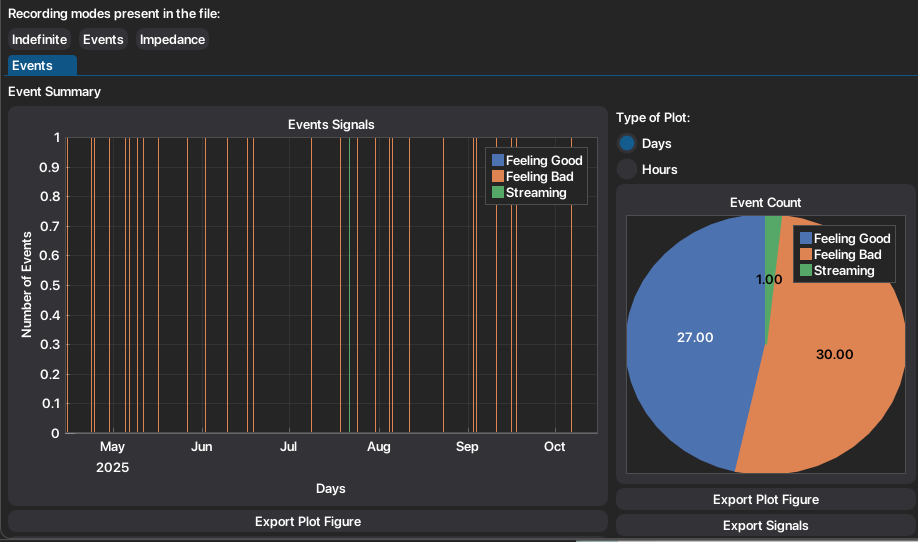
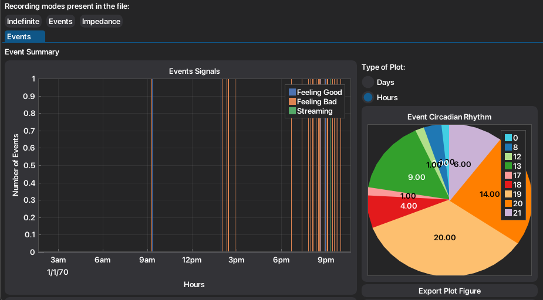

2. At-Home Data¶
Medtronic's Percept BrainSense™ technology allows at-home recordings to track the effects of symptoms, medication and routine outside of the clinic.
There are two at-home recording modes: Timeline and Events.
Timeline records the long-term band power throughout all day and Events record a 30 second snapshot, manually triggered by the user to record important events such as symptoms, medication, etc. The chronic recordings are acquired from a pre-selected contact pairs, and are restricted to bipolar settings and the stimulation electrodes used.
Mode |
Usage Con- text |
Stimulation Status |
Key Features |
|---|---|---|---|
Timeline |
At home |
On |
Long-term monitoring from pre-selected bipolar pair, power of 5 Hz band stored every 10 min; Contact pairs limited to stimulation-compatible. |
Events (LFP Snapshots) |
At home |
On |
Event-marked recordings, 30s LFP + PSD snapshot, time-stamped by patient manual input |
2.1. Timeline¶
The BrainSense™ Timeline mode acquires the mean signal power of a pre-defined sensing band (5 Hz bandwidth) every 10 minutes.
To access the signals, the user must select the "Timeline" tab. Automatically, the chronic recordings and the patient-marked events are plotted.
Respective information of the sensing configuration is also displayed, as well as the plot legend.
Recordings from the left hemisphere appear with the color green, and recordings from the right hemisphere appear with the color purple.
Marked events appear as vertical lines, marking the moment of the event.
Power features are extracted per signal (mean power, peak power and peak time).
Extracted features are also organized into groups to facilitate exportation of analog/related signals, for offline analysis.

The image above represent the Timeline tab in the Individual window. When in the Combined window, has access to event-locked analysis functionalities, described below. Additionally, the information correspondant to the sensing configuration of each file selected, is organized under the correspondent header.

2.1.1. Outlier Removal¶
Timeline is a chronic recording mode that stores an averaged power of a 5 Hz band, every 10 minutes. Although these are unique recording capacities, the system still presents some fragilities. It is very prone to missing points and to outlier values. NeoDBS offers an outlier removal filter, based on the root mean square (RMS) of each signal (per channel-day) and also allows the user to see moments where there are missing points. Extracted features can be recalculated as many times needed to allow the user to extract the metrics to the filtered signal.
The user selects a threshold factor to control outlier removal, that is calculated as: threshold = factor × RMS Any LFP value above this threshold is treated as an outlier and replaced by the RMS value.
Select the threshold value, by sliding the blue square on the "Remove Outlier" item. User can readjust threshold as many times needed.
The filtered signals will update the main plot.
If the user wants to recalculate timeline metrics, press "Recalculate Metrics".

2.1.2. Missing Points¶
As mentioned previously, Timeline recording mode is very prone to have missing points, due to its continuous configuration and low resolution. NeoDBS automatically identifies if there any missing points in the available signals and it is signaled in the respective tab (see image above). The missing points are computed as interpolation of the mean value between the bounding present points.
To see missing points from recordings, toggle checkbox "Show missing points".
For future analysis with the Timeline signals, the missing points are not considered.
2.1.3. Event-locked Analysis¶
When using the Combined window, the user has the possibility to epoch all the events marked by the user at-home (patient events), allowing an automatic event-locked analysis of the chronic recordings. The segments are centered around the patient event, with 1h-interval before and after the event.
Press "Analyze Events".
A new plot will appear, under a new child tab (Timeline Events), with the automatically segmented signals, centered around the marked event.
If the original signals were filtered, the epochs will be made from the filtered signals.
The same metrics extracted for the Timeline recordings will be extracted for the full epochs, the epoch before the event and the epoch after the event, organized hierarchically by event and hemisphere.

2.1.4. Circadian Rhythm¶
From the Timeline recordings, NeoDBS computes the circadian rhythm by aligning all recordings by their time component. The respective mean and standard deviation are calculated and plotted, according to the selected signals.
Under the collapsing header "Signal Analysis", press "Circadian Rhythm".
The signals are plotted, aligned by hour. Mean and standard deviation are automatically computed.
Mean circadian metrics are automatically extracted.
Mean, and standard deviation, are recalculated with signal toggling, replotted and metrics are recalculated.
To hide the individual signals, and only show mean and standard deviation, press "Hide days".
If any missing points are present in the signals, a nan interpolation will be conducted as not to interfere with feature extraction.

2.1.5. Stimulation¶
Stimulation current amplitude levels throughout the days can be accessed in the Timeline tab, under the header Signal Analysis. Information about the stimulation electrodes and current is tabled per day, and also presented in a graph. This information can be very helpful for adaptive stimulation cases or to check configuration changes made by user, such as turning off the stimulation due to discomfort/symptom worsening.
Under the collapsing header "Signal Analysis", press "Stimulation".
Stimulation amplitude will be plotted and information tabled.
All information can be properly exported.

2.2. Events¶
The BrainSense™ Events mode (LFP Snapshots) is for at home usage and is combined with the BrainSense™ Timeline mode. Patients manually mark events with a wireless device, time stamping events in the BrainSense™ timeline data and triggering recording of high definition LFP for 30s. The average PSD estimate is also internally computed by the DBS system and stored.

Select "Events" tab. The respective signals, functionalities and metrics will be displayed.
Metrics are organized into groups, to facilitate exportation.
Mean and standard deviation plots are recalculated, as the user selects/deselect signals.
To recalculate the mean metrics of the events, press "Recalculate Mean Metrics".
PSD's can be converted between dB or original power values, by toggling "Change to dB".
Standard deviation can also be converted into the 95% Confidence Interval, by choosing between the radio button under "Shaded Area".
Note
Changing units in the plot, will also convert the extracted features in the tables to the choosen units. Standard deviation may appear with negative values when converted to dB, but for statistical purposes must be considered as positive. The negative signal is kept for proper conversion to the original PSD units. Additionally, when the plot only shows the mean series, conversion of units is disabled. To convert units, deselect the "Mean Only" checkbox.
2.2.1. Event Summary¶
However, if chronic sensing is disabled (no Timeline button, but Events button is available) the user is still able to mark the patient events through the Medtronic's™ Patient App.
Through the same button, the timestamps of the marked events are displayed.

Select "Events" tab. The event summary will be displayed.
You can change between showing the plot per day or hour, showing the count of events per day or the circadian rhythm respectively.

Plots and signals are easily exported.